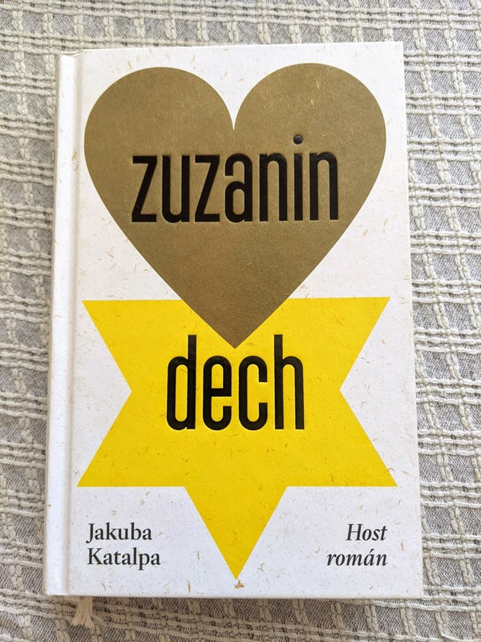

V posledních týdnech se u mě sešlo celkem dost nových titulů, kterými jsem doplnila svou knihovničku, a tak to snad v literární rubrice bude zase trochu víc žít. Hned na úvod jsem sáhla po poměrně nedávno vydaném románu Zuzanin dech (2020), na který jsem slyšela samé pozitivní recenze, a který jsem si nechala zaslat v rámci spolupráce s e-shopem Megaknihy.cz.
Už obálka s jasně žlutou hvězdou napoví, že klíčová část děje se odehrává za druhé světové války a že to tedy nebude úplně lehká četba. Hlavní hrdinkou příběhu je Zuzana Liebeskindová, dcera ze zámožné rodiny majitele prosperujícího cukrovaru, vychovávaná v hojnosti a blahobytu. Román je chronologicky rozdělen na 3 části - Zuzanino víceméně bezstarostné dětství, dospívání poznamenané nástupem nacismu a zaváděním protižidovských represí, a nakonec dospělost - část odehrávající se v koncentračním táboře a posléze zachycující Zuzanin život v následujících letech po skončení války. Hlavním tématem příběhu však není válka, jak by se mohlo na první pohled zdát. Klíčovou roli v románu hraje vztahový trojúhelník Zuzany a dvou jejích nejlepších kamarádů, Hanuše a Jana, v němž nechybí milostné vzplanutí - opětované i neopětované…
Kniha je vyprávěna přímočarým jazykem a v přítomném čase, což přispívá k tomu, že přestože má přes 300 stran, nebudete mít daleko k tomu přečíst ji na posezení, natolik je strhující. Autorčin jazyk je vůbec velice zajímavým charakteristickým prvkem románu - místy je velice naturalistický a úsporný, jindy překvapí snovými až poetickými obraty, díky čemuž vybočuje z řady jiných románů s obdobnou tematikou války a holocaustu.
Jediné, co mne na knize možná trochu zklamalo, bylo její finále. Měla jsem určitý tip, kam příběh zřejmě vyústí a že bude v závěru víc gradovat, a pak byl najednou na pár stránkách konec, pro mne až nepatřičně otevřený. To mi přijde na jinak tak výjimečný román opravdu škoda. Nicméně to nic nemění na tom, že Zuzanin dech je vynikající knížka a byla by škoda nechat si ji ujít.

Ráda bych slíbila, že příště se tu můžete těšit na něco oddechovějšího, ale jak tak na to koukám, nevim nevim… Tak čtení pod slunečníkem zdar :-)!